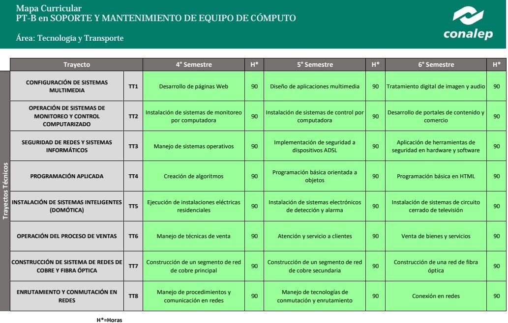

¿Qué es el Mapa Curricular?
El mapa curricular es una guía académica que presenta la estructura del plan de estudios de la carrera técnica en Soporte y Mantenimiento en Equipo de Cómputo. A través de este esquema, los estudiantes pueden conocer las materias que cursarán, así como las competencias técnicas y conocimientos necesarios para desarrollarse profesionalmente en el área de tecnologías de la información.
Cuarto a Sexto Semestre
En los últimos semestres, la formación se enfoca en el desarrollo de habilidades prácticas y técnicas especializadas. Los estudiantes aprenden sobre instalación, mantenimiento y reparación de hardware, configuración de redes básicas, diagnóstico de fallas en sistemas operativos, y el uso de herramientas de software para el soporte técnico. Esta etapa es clave para prepararlos para el campo laboral y/o estudios superiores en el área de informática.
